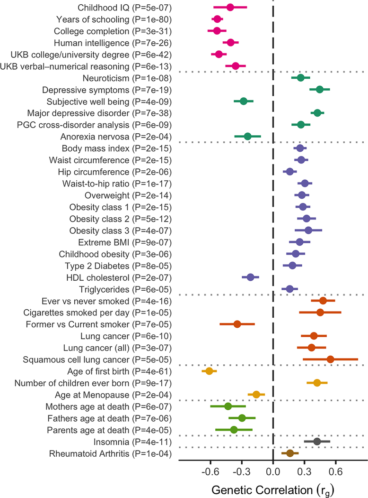
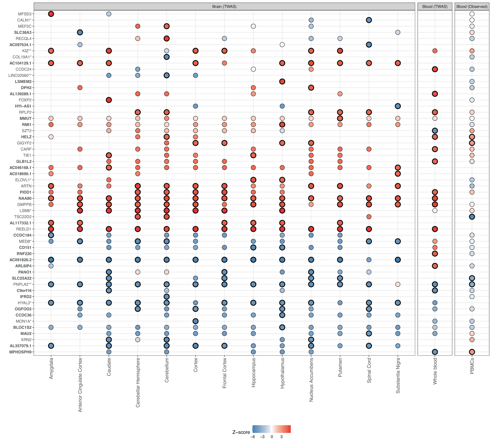
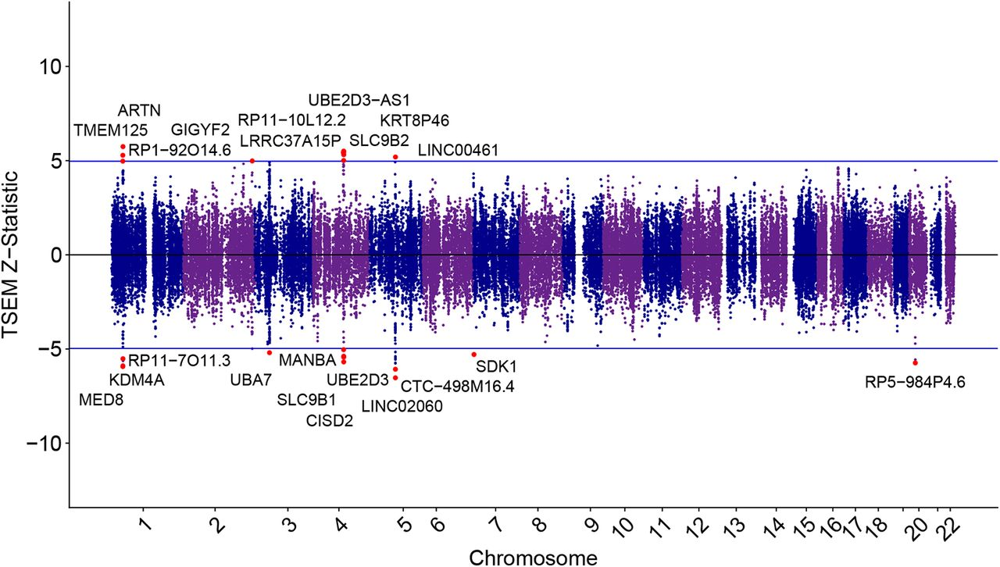
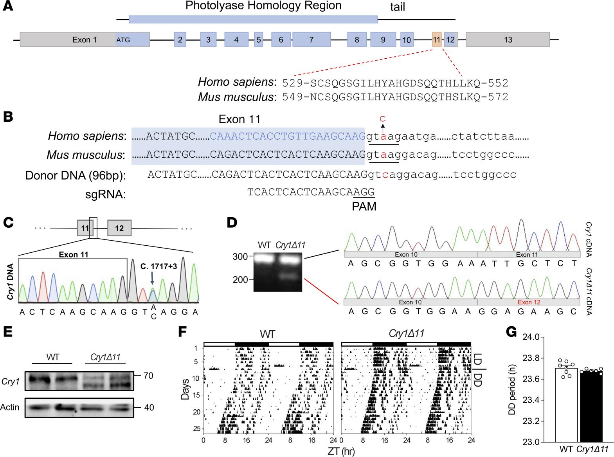
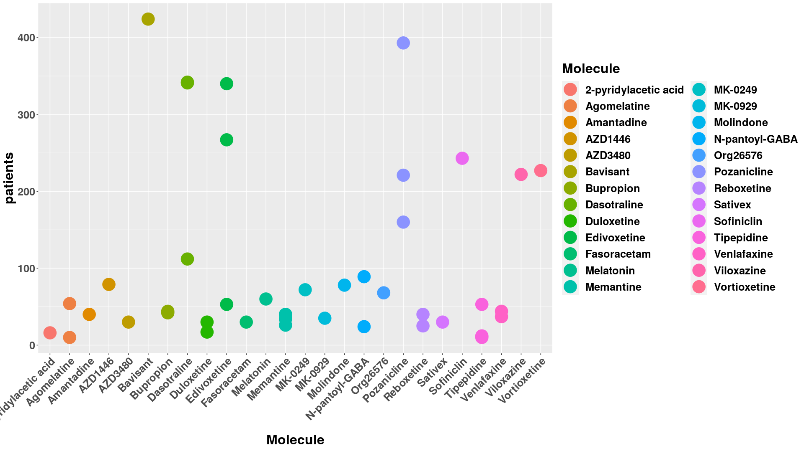
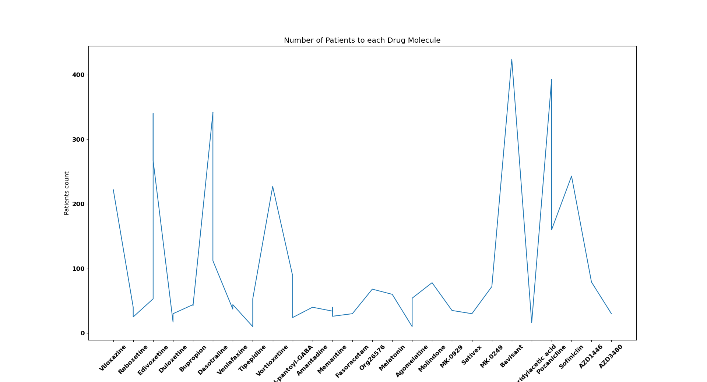
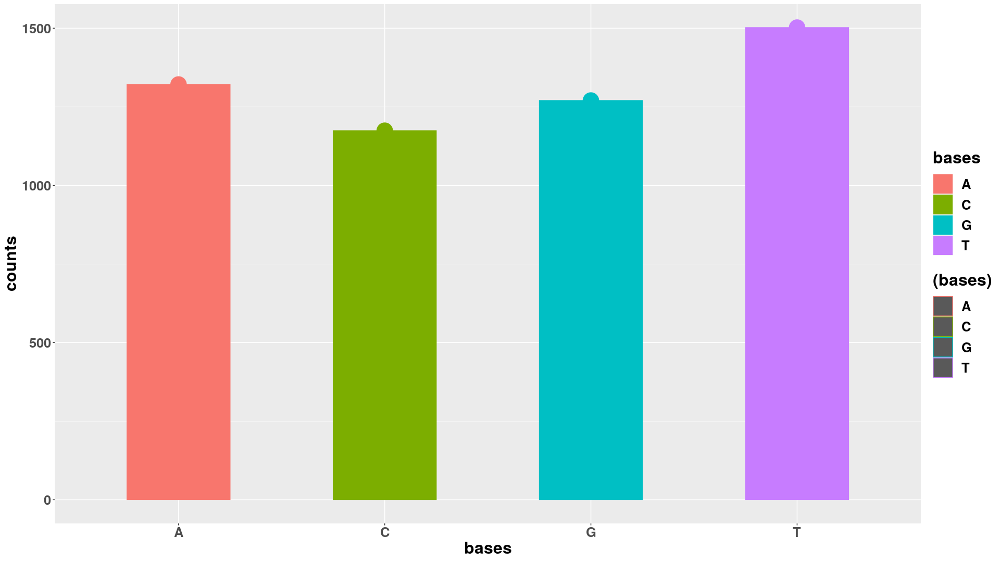

Genetics of attention deficit hyperactivity disorder
Faraone SV et al, Jun 11, 2018
Aim was to study the ADHD’s high genetic heritability of 74%.
The initial GWAS of ADHD did not discover any DNA variants that achieved genome-wide significance.
They took mixed study of twins, and previous genetic analysis.
Demontis describes that genes implicated by the genome-wide significant loci have relevant biological roles.
DUSP6 regulates neurotransmitter homeostasis by affecting dopamine levels
SEMA6D regulates neuronal wiring during embryonic development.. so on
Polygenic role for ADHD was confirmed by estimating polygenic risk scores in one subset of the sample.
There was no common DNA variants that is sufficient cause for ADHD, it remains unknown on how many variants make up for polygenic component.
Heritability is likely due to gene−gene interactions, gene−environment interactions or gene−environment correlations.
Twin estimates of heritability are less than 100%, that quite strongly suggest that environmental factors must be involved.
Genome-wide DNA methylation in association with ADHD, and in association with impulsive and callous traits
M. Meijer et al, Jan 31, 2020
To study DNA methylation in persistent ADHD and related traits.
First study to include Epigenome of participants with persistent and reduced ADHD.
Epigenome-wide analysis was performed with the Infinium® MethylationEPIC BeadChip (Illumina).
The readEPIC() function of the wateRmelon package was used to import methylation data and to compare intensities of methylated (M) and unmethylated (U) DNA.
The Comb-p Python module was used to identify differentially methylated regions (DMR) in all analyses.
From the assessment on DNA methylation; no global differences in DNA methylation were found between participants with persistent ADHD and healthy controls
Via regional analysis they identified a small DMR in the PPT2 gene (65 bp containing 4 probes) to be significantly hypomethylated in participants with persistent ADHD.
Hypermethylation of APOB and LPAR5 in peripheral blood might be associated with persistence of ADHD, which is probably due to genetic variation influencing DNA methylation.
Epigenetics and Attention-Deficit/Hyperactivity Disorder: New Perspectives?
Bojan Mirkovic et al, June 17, 2020
Aim was to understand influence of epigenetics on ADHD.
Epigenetic changes vary widely from one tissue to another. In the brain alone, DNA methylation can vary considerably from one region to another or from one system to another.
The first Epigenome-Wide Association Studies (EWAS) identified altered methylation in new genes that were not previously associated with ADHD such as MYT1L.
Studies on the association between DNA methylation and ADHD symptoms based on the candidate gene approach (mainly dopaminergic genes) are rare, compared to SNP association studies.
A large integrated epigenetic/genetic study of 391 children with ADHD reported an association between ADHD and DNA methylation levels at sites annotated to VIPR2 and other positions, although none of them were genome-wide significant.
Ultimately, the methylation differences associated with ADHD reported so far are generally small.
The deregulation of MicroRNAs could be involved in the pathophysiology of ADHD, as synthesis of miRNAs is regulated by methylation of DNA.
Discovery of the first genome-wide significant risk loci for attention-deficit/hyperactivity disorder
Demontis D et al, Aug 12, 2020
Aim was to study genome wide significant loci.
Genome-wide association meta-analysis of 20,183 diagnosed ADHD cases and 35,191 controls from 12 different cohorts that identifies variants surpassing genome-wide significance in 12 independent loci.
GWAS was conducted in each cohort (chinese, European…) using logistic regression with the imputed additive genotype dosages.
No genome-wide significant heterogeneity was observed in the ADHD GWAS meta-analysis.
PRS computed in each PGC study using iPSYCH as the training sample were consistently higher in ADHD cases as compared to controls.
Genome-wide significant loci on chromosomes 12 and 15 have more biological annotations supporting the co-localized genes.
Loci are located near genes that implicate neurodevelopmental processes that are likely to be relevant to ADHD, including FOXP2, SORCS3, and DUSP6.
The 12 significant loci are compelling, but only capture a tiny fraction of common variant risk for ADHD.
Significant genetic correlations between ADHD and other traits reveal overlap of genetic risk factors for ADHD across several groups of traits

Emerging drugs for the treatment of attention-deficit hyperactivity disorder (ADHD)
Marco Pozzi et al Sept 25, 2020
Aim was to study pharmacological treatment of ADHD made during 2010-2020.
During studies there were dropouts mainly due to side effects.
About 20% of treated patients could not tolerate their therapies or experience insufficient efficacy.
Amantadine to enhance cognitive functions and tipepidine for hyperactivity/impulsivity. Stand-alone emerging treatments for ADHD include viloxazine and dasotraline (pediatric)
Monoaminergic (neurotransmitters) reuptake inhibitors have a great potential to improve ADHD symptoms.
ADHD at the workplace: ADHD symptoms, diagnostic status, and work-related functioning
Anselm B. M. Fuermaier et al Feb 2, 2021
Aim was to examine the nature of work-related problems and impairments of adults with ADHD, and neuropsychological test performance.
Sample size of 1231 individuals from workplace and other 134 adults diagnosed from ADHD clinic.
It was questionnaire & Neuropsychological performance tests based evaluated using Conners’ Adult ADHD Rating Scale (CAARS): 66 items, scaled on four-points and followed by Weiss Functional Impairment Rating Scale (WFIRS): 70 items, scored on four-point scale.
Statistically Analysis concludes that work-related issues are common in individuals diagnosed with ADHD but also in individuals with symptoms of ADHD.
Individuals with ADHD experienced problems at work in particular in not meeting their own standards and perceived potential.
Although some neuropsychological tests did not predict work-related problems.
Deep learning model reveals potential risk genes for ADHD, especially Ephrin receptor gene EPHA5
Lu Liu et al. Jun 09, 2021; published in Briefings in Bioinformatics, Volume 22
Aim was to propose a convolutional neural network-based deep learning model for the classification of ADHD.
Results indicated that the deep learning model could capture the relationship between SNPs with insignificant P-values, while GWAS failed (needs lower P-value).
Identified a potential risk gene for ADHD, EPHA5 with a variant of rs4860671.
They applied saliency map analysis to the deep learning model and found potential ADHD-associated SNPs and genes.
Deep learning model achieved high accuracy of 0.9018, AUC of 0.9570 on their testing dataset.
This is a first deep learning method for the classification of ADHD with SNPs data.
ADGRL3 genomic variation implicated in neurogenesis and ADHD links functional effects to the incretin polypeptide GIP
Vidal, O.M et al, Feb 18, 2022
Aim was to analyze the potential pathogenicity effect of non-synonymous SNPs (nsSNPs) harbored in the ADGRL3 gene.
ADGRL3 has been shown to modulate neuronal interaction, axon guidance, and synaptic plasticity, which is highly controlled and orchestrated during CNS development.
Utilized 1013 nsSNPs related to the ADGRL3 gene from three databases (977 from the NCBI, 12 from the DisGeNET, and 24 from nsSNPdpe)
Applied six pathogenicity prediction software tools (i.e., Mutpred2, PANTHER-PSEP, PhD-SNP, Poly-Phen 2.0, PROVEAN, and SIFT)
Results indicate that marker rs35106420 is predicted to be pathogenic by every analytical tool and shows the highest score in terms of conservation, genetic, and molecular effects.
With results they hypothesized that ADGRL3 nsSNP-related conformational changes located at the HRM domain might disrupt its interaction with GIP (gastric inhibitory polypeptide) downstream signaling.
Found that the ADGRL3nsSNPS were located within the hormone receptor domain (HRM) and the GPCR-Autoproteolysis Inducing (GAIN) domains.
Effects of physical exercise on children with attention deficit hyperactivity disorder
Yuan-Shuo Chan et al, Apr 2022
To Examine effects of physical exercise in children with ADHD.
Aerobic moderate–high intensity exercise can promote BNDF synthesis, enhance neuroplasticity, and decrease the risk of nervous system disorders.
Intervention of single-bout of exercise offers immediate and persistent benefits in cognitive function, and long-term exercise training can effectively improve overall fitness and exert long-lasting effects on cognitive function.
At early stage due to impulsiveness, lack of motivation, impatience, and persistence of children with ADHD, interval training (HIIT) is the most recommended form of exercise.
Emphasized on perceptual motor exercises combined with cognitive tasks to improve cognitive function of children with ADHD.
Comprehensive analysis of omics data identifies relevant gene networks for Attention-Deficit/Hyperactivity Disorder (ADHD)
Cabana-Domínguez et al, Sept 24, 2022
Aim was to identify and characterize modules of co-expressed genes associated with ADHD.
Used data from peripheral blood mononuclear cells (PBMC) of 270 ADHD cases and 279 controls & identified seven ADHD-associated modules of co-expressed genes.
Multi-step approach was applied, first step: Weighted Gene Correlation Network Analysis (WGCNA) on the processed transcriptomic data.
The WGCNA identified a total of 27 modules of co-expressed genes with size ranging from 33 to 2191 genes.
After multiple testing correction they identified seven ADHD-associated modules of co-expressed genes.
Use of peripheral blood to assess gene expression signatures for the disorder highlights that the combination of multi-omics signals provides deeper and broader insights into the biological mechanisms underlying the disorder.
Treatment biomarkers for ADHD: Taking stock and moving forward
Michelini G et al, Oct 12, 2022
Aim was to study progress on discovery of treatment biomarkers for ADHD and their translation towards personalized treatment approaches, with focus on predictive and monitoring/response biomarkers.
The most promising measures for treatment prediction are EEG (electroencephalogram), genetic markers involved in PRS and CNVs.
Overall concludes that development of biomarker approaches is consistent with the principles of precision and personalized medicine.
This showcases the possible driving research on clinical and translational approach, as the existent research on ADHD biomarker to date has taken a primarily mechanistic approach.
Till date every biomarker research has many limitations like small samples, no validation out of sample (diversity), small variance in treatment, no longitudinal studies.
Sleep disturbances in ADHD: investigating the contribution of polygenic liability for ADHD and sleep-related phenotypes
Lewis, K.J.S., Martin J et al, Jan 07, 2023
Aim was to test whether sleep disturbances in children with ADHD are driven by polygenic liability for general population sleep phenotypes and if are they indicator of ADHD severity.
Compared polygenic liability for insomnia in children to their parents’ average liability.
Found that polygenic liability for long sleep duration was over-transmitted from parents to children with ADHD and this finding was supported in a combined analysis using an independent replication sample.
Could not find evidence that polygenic liability for sleep disturbances was associated with an increased risk of insomnia, poor sleep quality or hypersomnia in children with ADHD.
Found weak evidence that children with ADHD over-inherit polygenic liability for longer sleep duration.
Results also indicated that polygenic liability for sleep disturbances was not associated with an increased risk of insomnia, poor sleep quality, or hypersomnia in children with ADHD.
Genome-wide analyses of ADHD identify 27 risk loci, refine the genetic architecture and implicate several cognitive domains
Demontis, D et al, Jan 26, 2023
GWAS of 38,691 Individuals & 186,843 controls with ADHD (largest uptake).
Data source from iPSYCH (25,895 cases; 37,148 controls), deCODE genetics (8,281 cases; 137,993 controls) and previously published data from 10 ADHD cohorts with European ancestry collected by the PGC (4,515 cases; 11,702 controls),
Performed transcriptome-wide association study (TWAS) of the genetically regulated gene expression using EpiXcan to identify risk genes on 924 samples.
TWAS identified 23 distinct genes with different gene expression level in ADHD compared to Control.
Three of the strongest associated loci (p < 5x10^-14 ) were on chromosome 1, 5 and 11.
Observed that ADHD risk genes are significant in frontal cortex of brain in cells like inhibitory, excitatory and dopaminergic neuron.
Summarize that ADHD is polygenic and also is influenced by other psychiatric disorders.
Transcriptomic risk scores for attention deficit/hyperactivity disorder
Judit Cabana-Domínguez et al, Aug 03, 2023
Aim was to evaluate Transcription risk score (TRS) in peripheral blood mononuclear cells of individuals with ADHD and controls.
TWAS was performed with S-PrediXcan (python) using statistics from largest GWAS on ADHD.
56 genes showed transcriptome-wide significant association with ADHD, of which 31 did not overlap with previously described GWAS loci or TWAS results by Demontis (previous paper); might be due to differences in the tissues and methods used to construct the expression reference panel.
Found association between ADHD and TRSs in PBMCs constructed using TWAS results from multiple brain areas.
Shows that individuals with ADHD carry a higher burden of TRSs than controls.
TRSs were uncorrelated with Polygenic risk score (PRS) for ADHD.
Z-scores are plotted for the 56 genes significantly associated with ADHD. Significants in black, Z-score from negative blue, white & positive red.

Examining Differences in the Genetic and Functional Architecture of ADHD Diagnosed in Childhood and Adulthood
Sophie Breunig et al, Aug 07, 2023
Aim was to investigate whether individuals who are diagnosed as children differ from those who are diagnosed in adulthood with respect to shared and unique architecture at the genome-wide, functional, and gene expression level of analysis.
Used Genomic SEM (structural equation modeling) to investigate genetic correlations of GWAS sample taken from iPSYCH.
Then applied Stratified Genomic SEM and transcriptome-wide SEM (T-SEM) to identify functional annotations and patterns of gene expression associated with genetic risk sharing or divergence across the ADHD subgroups.
At the functional and gene expression levels, Stratified Genomic SEM and T-SEM analyses revealed three annotations and 22 genes, respectively, that were significantly associated with genetic risk sharing across the subtypes.
Adulthood diagnosed ADHD exhibited a significantly larger negative r_g (genetic correlation) with educational attainment.
The genetic correlation (r_g) across childhood and adulthood diagnosed ADHD was 0.76 (SEr = 0.06).
T-SEM Pinpoints Genes Associated with General ADHD
Univariate TWAS reports two significant gene expression associated with adulthood and 19 genes associated with childhood ADHD.
Miami plot for gene expression hits for the combined factor of childhood and adulthood diagnosed ADHD.
The upper and lower blue lines represent the Bonferroni corrected significance threshold. Genes surpassing the upper and lower cutoff respectively are upwardly and downwardly regulated respectively in the ADHD factor. The most significant gene across tissue types are labeled and colored as red dots.

Aim was to demonstrate that Cry1Δ11 mice showed ADHD-like symptoms.
Cry1Δ11 mice were generated using CRISPR/Cas9 technology. Donor DNA of 96 bp in length, sgRNA, and in vitro–transcribed Cas9 mRNA were microinjected into E0.5 zygotes
Also identified that hyperactive DRD1 signaling may be the underlying pathological mechanism.
Circadian clock proteins might influence dopaminergic signaling in different ways, such as by dopamine synthesis, degradation, and signal transduction.
In humans, the CRY1 mutation leads to mis-splicing, skipping exon 11.

Figure 1: (A) Schematic representation of mouse Cry1 protein (top), genomic structure (middle), and aa sequence encoded by exon 11 of human or mouse Cry1 gene (bottom).
R/Python Codes
ggplot on drug molecules & patients it was addressed
## install it by running: install.packages("ggplot2")## call librarylibrary("ggplot2")## import adhd data from csv
adhd <-read.csv("exp-treatment-10y.csv")## making plot with Molecule on x-axis## no of pateints in y-axis
myplot <-ggplot(adhd, aes(x = Molecule, y = patients, color = Molecule))+geom_point(size =10)## rotate the name to not overlap and increase font size
myplot +theme(axis.text.x =element_text(angle =45, vjust =1, hjust =1), text =element_text(size =23, face ="bold"))## save the plot to png file with proper aspect ratioggsave("pat-mol.png", width =1920, height =1080, units ="px", dpi =100)

matplot on drug molecule & patients count
"""plot in python using matplotlib library, and pandas for dataframes"""# get a module from matplotlib library as plt (name)import matplotlib.pyplot as plt
# import read_csv function from pandasfrom pandas import read_csv as readcsv
# capture from csv fileadhd= readcsv('exp-treatment-10y.csv')# assign the list to x and y axisx= adhd['Molecule']y= adhd['patients']# increase font size
plt.rcParams.update({'font.size': 11, 'font.weight': 'bold'})# make a plot
plt.plot(x, y)# rotate the x axis labels to it does not overlap
plt.xticks(rotation=45)
plt.title("Number of Patients to each Drug Molecule")
plt.xlabel('Drug Molecules')
plt.ylabel('Patients count')# saving the final plot
plt.savefig('pat-mol2.png')# shows the final plot when run
plt.show()

calculate nucleotide content
## call biostring librarylibrary("Biostrings")## get fasta file and read the sequence strings
gene <-readDNAStringSet("../fasta/dusp6-gene.fna")print(gene)## translate gene content to amino acids units
protein <-translate(gene)print(protein)## calculate the number of bases in the sequence
base_count <-letterFrequency(gene, letters ="ACGT", OR =0)print(base_count)## make a vector to plot
counts <-as.vector(letterFrequency(gene[[1]], letters ="ACGT", OR =0))
bases <-c("A", "C", "G", "T")library("ggplot2")## plot
acgt <-ggplot(mapping =aes(x = bases, y = counts, color =(bases), fill = bases))+geom_point(size =10)+geom_bar(stat ="identity", width =0.5)+theme(text =element_text(size =23, face ="bold"))ggsave("base-count.png", width =1920, height =1080, units ="px", dpi =100)

Bibliography
Faraone SV, Larsson H. Genetics of attention deficit hyperactivity disorder. Mol Psychiatry. 2019 Apr;24(4):562-575. doi: 10.1038/s41380-018-0070-0. Epub 2018 Jun 11. PMID: 29892054; PMCID: PMC6477889. https://www.ncbi.nlm.nih.gov/pmc/articles/PMC6477889/
M. Meijer, M. Klein, et al, Genome-wide DNA methylati on in associati on with persistent att enti on-defi cit/hyperacti vity disorder, and in associati on with impulsive and callous traits. Fronti ers in Geneti cs, 2020, DOI: 10.3389/fgene.2020.00016. https://www.frontiersin.org/articles/10.3389/fgene.2020.00016/full
Mirkovic Bojan, Chagraoui Abdeslam, Gerardin Priscille, Cohen David. Epigenetics and Attention-Deficit/Hyperactivity Disorder: New Perspectives?. Frontiers in Psychiatry 11 , 2020 DOI=10.3389/fpsyt.2020.00579 https://www.frontiersin.org/articles/10.3389/fpsyt.2020.00579/full
Demontis D. et al, Discovery of the first genome-wide significant risk loci for attention deficit/hyperactivity disorder. Nat Genet. 2019 Jan;51(1):63-75. doi: 10.1038/s41588-018-0269-7. Epub 2018 Nov 26. PMID: 30478444; PMCID: PMC6481311. https://www.ncbi.nlm.nih.gov/pmc/articles/PMC6481311/
Chan YS, Jang JT, Ho CS. Effects of physical exercise on children with attention deficit hyperactivity disorder. Biomed J. 2022 Apr;45(2):265-270. doi: 10.1016/j.bj.2021.11.011. Epub 2021 Nov 29. PMID: 34856393; PMCID: PMC9250090. https://www.ncbi.nlm.nih.gov/pmc/articles/PMC9250090/
Polygenic Risk Score: Score that is the effect of many genetic variants on an individual’s phenotype, calculated as a weighted sum of trait-associated alleles
PBMC: peripheral blood cell with round nucleus
nsSNPs: non-synonymous single nucleotide polymorphism (change in single base -> amino acid change)
Biomarker: objective measure that captures what is happening in a cell or an organism at a given moment
EEg - electroencephalogram - test used to detect abnormalities in brain waves or electrical activity
Polygenic scores - individual index of genetic liability for a phenotype of interest and can be used to better understand the genetic relationship between ADHD and sleep problems.
ppt2 gene - palmitoyl protein thioesterase family
epigenome - changes to dna/histone in regulating gene expression